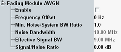

The following parameters enable and configure the AWGN insertion on the fading module. For background information, see "AWGN Generator".

For carrier aggregation scenarios, you can configure the settings per component carrier.
- Enable AWGN for one carrier only.
- Configure the frequency offset to shift the noise center frequency to the center frequency of the aggregated bandwidth.
- Increase the "Min. Noise/System BW Ratio" so that the noise bandwidth equals the aggregated bandwidth.
These settings avoid undesired effects due to overlapping noise bandwidths of adjacent carriers.
Enables/disables AWGN insertion via the fading module.
Remote command:Shifts the center frequency of the noise bandwidth relative to the carrier center frequency.
Remote command:Configures the minimum ratio between the noise bandwidth and the cell bandwidth.
Remote command:Displays the actual noise bandwidth, resulting from the "Min. Noise/System BW Ratio" and the cell bandwidth.
Remote command:Displays the part of the cell bandwidth that is dedicated to the downlink subcarriers.
Specifies the signal to noise ratio.
Remote command: